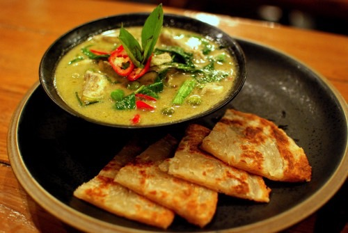
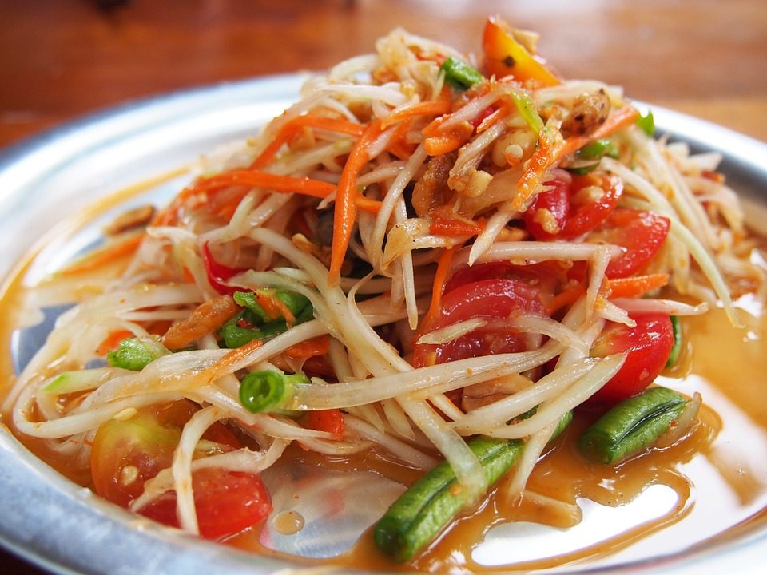

Thai Cooking
I'm learning to cook Thai food, and I'm really excited about it! A lot of the ingredients and cooking techniques are pretty different from western cooking. I look forward to sharing my progress with you.
Finding Thai Ingredients
First thing's first, you'll want to find a good Asian grocery that stocks Thai products. You can also purchase most things you'll need online, but it will be significantly more expensive.

I know you want to eat this curry. It's delicious.

This papaya salad is just as tasty and is a lot easier to make, though. Let's start with that. You'll need:
- 1 tblsp dried shrimp
- 1 ounce palm sugar
- 1/4 teaspoon water
- 1 small lime
- 1 peeled medium garlic glove
- 2 fresh stemmed Thai chiles, more to taste
- 1 ounce long beans
- 1 tblsp lime juice (preferably from key limes)
- 1 tblsp Thai fish sauce
- 1 tblsp tamarind water (recipe here!)
- 4 ounces peeled and shredded green papaya
- 6 cherry tomatoes, halved
- 2 tblsp coarsely chopped roasted unsalted peanuts
- 1 cabbage wedge
(Recipe from Andy Ricker in his book Pok Pok.) You can easily make this vegetarian/vegan by omitting the shrimp and replacing the fish sauce with mushroom sauce.
You'll also probably want to have the following equipment:
- mandoline
- Thai clay mortar
- wooden pestle
Want to know how to assemble it?
- Heat small shrimp in wok over high heat, stirring constantly, 5 minutes. Set aside.
- Put palm sugar in microwaveable bowl and cover with plastic wrap, and microwave about 10 seconds until softened.
- Pound mixture in a mortar until it makes a smooth paste
- Cut lime lengthwise into 6ths, set aside.
- Combine garlic, chiles, and 1 tblsp softened palm sugar into morat and pound until it's broken down a little, about 10 seconds.
- Add 3 lime wedges and pound them lightly, then add shrimp. Don't smash them.
- Add the long beans, and pound lightly to bruise them.
- Add lime juice, fish sauce, tamarind water, and papaya to mortar. Pound lightly at an angle for about 10 seconds.
- Toss with a spoon, and add tomatoes and peanuts. Pound lightly.
- Transfer to plate. You're done!
There are four regional cuisines (and each region has their own take on papaya salad, as well as plenty of other dishes). The regions and their preferred ingredients and/or flavor profiles follow:
| Northern |
Northeastern |
Central |
Southern |
| Dried spices |
Fermented fish |
Sweet |
Lots of fresh spices |
| Bitterness |
Pungent flavors |
Shrimp paste |
Sour fruits |
| Tamarind |
Simple |
Lime, tamarind |
Coconut milk and cream |
| Mild heat |
Fiery Heat |
Coconut milk |
Often the spiciest |
If you'd like to know more, a great resource is
Hot Thai Kitchen. It's set up in a way that's very easy to understand. The HTML starts with a couple of divs, separating sections at the top of the page (but still in the body). After that, there is a lot of linking to other languages, like JavaScript and jQuery. There's no footer here. I also see an iframe declaration. I'm not quite sure what that does, but it looks like it creates a frame which the rest of the website sits inside. Overall, this site has a very pleasing, easy-to-follow design in pleasant colors.